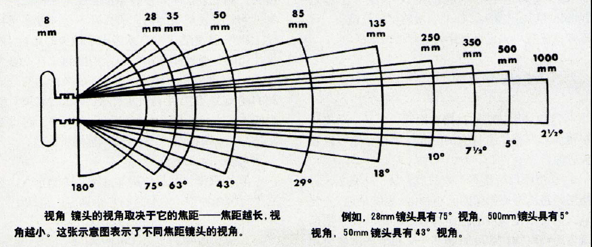

第7章 兴趣
生活要有兴趣。
7.1 八小时生活制
八小时工作制是空想社会主义代表人物欧文提出的，后来经过不断斗争基本成了全世界通行的规则。然而，这也是个很有意思的社会议题，对于一个实际不存在的社会平均人，八小时工作，八小时睡觉，这样每天还有八小时生活。其实在我看来，八小时工作最大的意义不是什么权利争取，而是那另外的八小时生活创造的社会价值。
当今社会绝大多数的经济行为是对外面向陌生人的，各部门分工协作，专业会提升效率，标准化与模块化会降低使用门槛。这里我们用一种真空里的球形鸡式的视角来分析下，张三生产面包，单个面包单人平均生产时间100分钟，而生产的面包我10分钟就能吃完。也就是说，张三的客户如果是100人，每天有30分钟的使用需求时间（也就是吃3个面包），那么他每天如果生产超过300个面包要用掉30000分钟的生产时间，那么他需要62.5人遵守八小时工作制来生产。这样他实际对外提供了37.5个人的面包，不够实际对外100人需求。如果其生产效率降低，八小时工作恰好满足工作人员的面包需求，那么整体而言这个面包厂就算移出社会也没啥影响。但如果效率提高，八小时工作制可能对外提供超过100人的量，这个时候，多出来的面包就是浪费。也就是效率在需求稳定的市场上是有上限的，这个上限其实就是用户的使用时间，这个时间被占完了，效率提升就没意义了。当然商家是有办法让消费者产生新需求的，但很遗憾没法产生新使用时间，时间对多数人是平等的。
如果效率存在上限，那么过高的生产只会延长个体的工作时间而消耗生活时间，生活时间的压缩实际上减弱了需求使用时间，那么总体需求就会下降，过量生产就更没意义。理想的情况是每个人的八小时工作产出会对应另外八小时的生活需求，从简单计算的角度，八小时工作制实质上是保证了八小时的生活需求满足，而工作效率必须要高于生活需求满足效率，因为除了八小时工作还有双休日的需求也要满足。如果没有生活只有工作，那么工作所对应的陌生人需求实际上也无法满足。如果一个经济体全都在加班，那么大概率是个出口为主的国家。反之，如果一个经济体严格保证生活八小时，也就是福利国家，其进出口的东西产品附加值必然是出口附加值极高而进口附加值很低，否则国家经济不会稳定。
不过现实情况要复杂得多，主要是现在全球都基本市场化了，过量的生产总能找到需求，而压缩的生活需求却可以用高密度高质量的刺激来满足。举个例子，原来我要等一天去听半小时的评书，现在我开二倍速15分钟就完了，多出的15分钟当然可以用到生产上（延长工作时间）或新需求（填补生活时间）上，前者总能找到人来消费我的生产，而后者对社会要求更多的娱乐项目。这个现状保证了即使生产生活时间不对等，只要我们创造新需求，经济游戏是一定可以持续玩下去的，只要我们保证每个人的所有时间一直被填满。技术进步很大程度上就是在替我们解放出来的时间寻找消耗的方法。
另一个让情况更加复杂的因素是时间，需求不是稳定输出的，经济体可以储蓄今天的需求来获得未来需求的集中释放。这种情况下就要涉及利率这个我认为人类历史上最奇特的发明，因为它尝试量化了今天与未来的价值并放到一起去比较。简单说需求对个人价值是相对一致的，但不同时间满足价格是不一样的。价值对个人而言远不如价格有意义，日常生活的收入支出都是按价格衡量，这个价格是对陌生人的所以反应普遍需求，对个人来说则会出现很大差异，例如腐乳对有些人一文不值但有些人则每顿饭都需要，市面价总是平均了所有人需求，所以当你看到某个对你完全没意义的东西的标价时一定有人觉得这个价挺便宜，个人口味不一样。不过这是十年前，现在个性化定价不再是平均所有人需求了，所以一定会杀熟，谁让你需要呢。未来产品价格会收敛到个人需求价值，聪明的商家会设定在那个你刚好接受的最高价上。
而不同行业最大的区别也在对需求控制上，有些行业在透支未来需求，有些行业则始终在创造稀缺。工业农业受当前自然资源限制，产量有上限，本质就是稀缺的，但面对的需求也是有上限的。我生产100只杯子，如果有99个人需要，那么多余的1个生产没有意义。但如果我只生产50只杯子创造稀缺，那么就能获得稀缺带来的溢价。这类行业属于技术过剩的，如果生产超过了需求，对生产方没有好处，还不如减产。但服务业的需求是可以无限产生的，所以这类行业会倾向于透支未来需求，直到把所有人的当前与未来时间占满，眼下还不可能，但大概50年后全球人口稳定后，这个需求也会达到上限。但金融业是个搅局者，它试图量化不同行业的当前与未来风险并通过控制风险来获利，如果连成一个整体，大经济体可能就更稳定了。这应该是个自发过程。
利用需求制造稀缺是最常见的商业模式，在房地产上，即使人口结构稳定了，地产商也会找出附加值来制造稀缺，最常见就是制造焦虑，让你提前为未来价值买单。或者制造流行，例如一定要买房，一定要孩子上学后换房，一定要复式结构…所有的需求都是可被引导的，个体随大流的习惯是一定存在的，所以房价的走向我不知道，但利润率一定要维持在他们从业人员生活八小时的开支。这里面的不平衡是一些行业加班加点放弃个人当前生活，而产生的产品则满足了其他行业的生活需求，或者说八小时的生产只能满足别人六小时的平均生活需求，这个时候就只能靠市场制造稀缺与价格价值不对等来提高生产或降低人们需求了。当然如果八小时生产满足的是十个小时的需求，那么这个行业就需要想办法引导人们的新需求或提高满足强度，互联网行业就是典型案例，而由于资源门槛低，稀缺性也不太好制造，不过这些年所谓新零售、消费升级还有知识付费等概念则开始把线下的一些商业忽悠经验搬到了线上制造稀缺，似乎效果还不错，韭菜层出不穷。
如果八小时的生活是雷打不动的，那所有八小时生活相关需求一定要其他行业去满足，而整个经济体的利润率应该是稳定的，这同时也是需求的价格贬值率，今年100元产生的乐趣明年要115元才能产生，毕竟你的工作总时间又没变，工资的涨幅就是需求贬值，只不过有些行业确实要比其他行业利润率高一大截，而有些行业则饱受贬值之苦。最简单的例子，如果100块放银行一年后成了115块，那么如果100块去做生产赚了110块就是个赔钱买卖，不如放弃生产跟着银行一起贬值，也正是这个原因利率以后应该会越来越低，不然大家都去吃老本，发达国家的经济体量大，利率一般都不高，经济发展也慢，毕竟需求都满足差不多了，而发展中国家要依赖控制利率去满足增长的需求与避免经济过热。
其实就个人生活而言完全没必要去根据社会提供的需求来安排，可以按周分配来满足个人需求，一日三餐就算自己做加起来三个小时也够了，两个小时放到个人卫生清理上也是相对合理的，还有三个小时是可以自由支配的，加上周末不工作时间一周会有37个小时。不过你也会发现很多游戏设计通关时间都是这个数，大概他们就是要耗掉你所有的个人时间。其实可以设计一个应用来记录闲暇时间，你统计上一个周就可能发现很多很有趣的事。例如上面没有提交通时间，事实上这个不好算，因为如果你是乘客，那这段时间属于碎片可利用时间，如果是司机就是纯消耗了。之前帖子我也说过，如果你交通成本低于你等量时间获得的其他乐趣收益，那么就别费神去开车，除非你享受这个过程。此外很多时间并不完整出现，所以对应如果想利用这些时间来做想做的事就要学会香肠战术，把每件事切成小模块，模块间连接不要复杂，相信经常编程的人很熟悉这个过程。当然我说的情况不包括带娃，加上个娃个人每天最多剩一个小时，还可能都是碎片时间，如果是两个，那么睡觉跟工作必然全盘影响，负责任的父母都是很伟大的。
八小时工作制实质上是保证每周37个小时的个人需求时间，人与人差距的秘密可能就都在这里了，有人强调利用这段时间来提高自己竞争力，有人则放在娱乐上活在当下，有人则回归家庭肩负责任，还有人则凝神静思追求心流…但更多的人只是在犹豫中荒废了这段时间。没有哪一种选择是绝对正确的，都有其对应的需求与生存之道，而真正搞清自己需求着实不是个简单的事，毕竟阿波罗神庙上“认识你自己”的箴言已经流行千年。
7.2 修电脑
个人文档单一项目大小一般10GB以内，USB3.0的读写速度可以达到500MB/s，可以保证五分钟内转移完成，因此常规固态硬盘可作为日常应用首选。TF卡读写速度符合UHS可以达到100MB/s，可存储4K视频，千兆网卡也就这个速度，优盘读写速度也在这个范围但会低一些，但不适合作为日常硬盘。个人用1T硬盘应该足够备份需求了，但照片之类需要存在云端或家庭NAS上。当前的读写速度基本匹配了4G/5G网络传输速度，可以预见的是，当下一代无线网络真实传输速度达到1G/s（5G理论速度）后，存储用硬盘就属于多余了，本机有个128GB存储空间配合云存储与云计算，所有事都是在云端来完成，个人终端作用主要会用来处理网络串流数据与本地少量计算的展示，但却要订阅云端服务来维持正常使用，这个趋势会在2030年左右看到，那时候个人电脑其实更多就是个输入输出的设备。
硬件方面，CPU、主板与内存一定要搭配。解决硬件问题三板斧是南桥、CPU与显卡，主板上这三个地方集成度高，容易出问题，不过建议找人维修，不要自己折腾。
软件方面，需要了解权限，控制好软件权限就很少会遇到安全问题。不过，解决实际问题只需要三板斧：重启、重装与安全模式。
计算机里所有文件都是二进制的。二进制8位一个字节，ASCII用一个字节就够了，但其他语言就需要其他编码方式，后来ISO出了标准，就有了unicode编码字符集，可以无限扩充，但编码的实现或者解析方式还是需要编码，这就有了变字节数的utf-8与相对固定的utf-16，utf-32，编码方式主要取决于存储空间，很多文件依然用ASCII就是为了单字节字符省空间。base64算法是用来把非ASCII码字符二进制字符串转为可打印的64个字符并可以进行文本编辑。
7.4 游戏迷
80年代出生，90年代记事，我是经历了游戏厅、街机、电脑厅、网吧与电子竞技兴起的过程的。其实前三个我都没玩过，最多就是跟着小伙伴进屋，然后看着他们玩。90年代的小学教育是严格禁止三室一厅的，所以当时我能跟着进去也算我个人突破了，那个时候我还是很怕犯错的。至于说玩，一方面没这个零花，另一方面水平实在太菜，玩也是丢人。
后来家里有了小霸王学习机，我的主要精力就放在假期刷碗赚零花买卡带上了，现在想想虽然花了钱但可能还是玩的盗版，因为动不动就几十上百合一。那时候已经有土星跟世嘉了，但能玩上FC游戏我就很满足了。我的卡带多是表哥升学后留下来的，独生子女这一代人虽然没有兄弟姐妹，但父母辈却都有，因此表兄弟间假期经常串门。我很小时表哥们就带着玩游戏看漫画，而我因为年龄小且唯一的表弟学习表现不佳，所以表哥们的玩物最后实际都到了我手里，现在加上我买的都躺到储藏室一个大箱子里了。
同时，跟同龄人互换卡带也是男生间最常见的周末活动，那时候到了周末，小伙伴会带着自己的宝贝集中到一家里。有时候玩游戏棋，有时候打自订规则的扑克，有时候看漫画，但更多时候是打游戏。如果家里不方便，一般会去小区池塘里捞草鱼跟虾，建筑工地里偷转头搭炉子玩火，楼前草地踢球打弹珠玩牌或逮蚂蚱。经常也会出现一阵阵的流行，卡牌收集、四驱车、新玩具零食，主题通常一个接一个，起源大概要依赖各个小学小卖部或门口摊位间的情报流通。现在想来那个没有手机没有网络的时代玩真的选择挺多，现在似乎都是各玩各的了。
慢慢的电脑开始在2000年后进入家庭，总会有几个家里阔绰的小伙伴先配置上，然后各种电脑版游戏的名字就开始传播。像我这种比较迟钝的也逐渐发现卡带换不动了，因为别人开始换光盘软盘了。等到我软磨硬泡让家里添置上电脑后，高中生活就开始了。这很尴尬，设备有了，但两三周才休息一天根本玩不了多少游戏，不过那时候游戏是真便宜，2-5元一张的盗版盘充斥着电脑城的一层，我好像就买到过根本读不出来的盘。不过即便环境时间条件如此恶劣，我也将《仙剑奇侠传》等好几个游戏通关了，只不过周围的小伙伴早就从《传奇》跟《石器时代》的外挂中毕业，投入了《魔兽世界》的怀抱之中。那时候我就发现，我在游戏上要落后同龄人大概5-10年，不过那时候自然是考学优先。不过此时我已经大概可以把游戏进行归类，例如角色扮演、即时战略、射击动作、休闲、模拟经营等，分类是研究的第一步。
2006年进入大学，同龄人的先锋们已经开始在不同网游间切换了。我也是那时候才真正接触网络，很重要的原因可能是网吧遍地开花，成为大学生看电影打游戏的首选。不过时间到了2008年，笔记本电脑的价格终于降到了可负担的四五千水平，一时间整个男生宿舍的娱乐都成了联网打cs或魔兽争霸，每个人抱着自己的笔记本特别开心地探索，我也不例外，不过此时我已经有了时间控制的概念，所以打游戏一般是在周末，同样还是单机rpg游戏。再看同龄人，网游时间先是被社交网站占领，之后又迅速被社交网站上的偷菜等小游戏反噬，慢慢又成了页游的天下。值得纪念的是我在大一寒假购买了第一款正版游戏《仙剑客栈》，然而这张光盘最后还是意外损毁了。
因为我落后同龄人的反应，等到大学毕业也没入网游的坑，但那个时候因为捣腾虚拟机，接触了很多10年前的单机游戏，所以玩新游戏的同时也在补课老游戏。我的后知后觉有个潜在的优势或劣势，因为我关注的游戏新旧都有，所以可以感受到技术进步，但坏处就是一卡住就会去想看攻略。不过文字冒险类游戏是大学我才接触到的，抛开分支去看有点像幻灯片，但正是因为文字冒险类游戏的探索，我才意识到动画（A）、漫画（C）与游戏（G）之间密不可分的关系，这里面的里程碑就是《逆转裁判》系列。我当然是用模拟器玩的，但这是一个了解ACG爱好者或者说宅文化的起点，有个大学同学带我入的坑，这时才发现日本除了久石让与宫崎骏，还有一大片优秀作品，这样从大学起我才又续上了因为中学中断的动漫爱好。
不过我的爱好坦白说挺功利的，我没有那么多时间去重新体会所有，就是去玩那些殿堂级的游戏或所谓神作。不过，我也越来越发现其实我的口味与评测出来的并不一样，很多别人觉得好的游戏我就是玩不下去，这时看看周围，塞班系统已经出现了，手机游戏正在萌芽，而掌机却正是火爆的时候，与我关注的GBA不同，掌机是DSL与PS争霸的年代，我自然错过去了，研一一个月900元的补贴买不起，而我正是从研究生阶段经济上与家里独立的。很惭愧，我大学虽然有奖学金跟校内勤工助学岗位，但加到一起也就够部分生活费，而我又很排斥去社会上打工，所以学费生活费基本还是家里出。当然，现在来看国内大学的学费对比北美跟不要钱差不多，不过听说国内也在涨价。现在想来，从普惠高等教育的性价比上看，国内还是很高的，也难怪近年来亚非拉小兄弟们总来国内读书，享受超国民待遇不说，付出真的不多。不过论及精英高等教育，充足的资金支持是必要的，国外私校的基金管理制度可以保证一部分收入来冲抵低收入家庭学生的学费，国内公立学校多，举债为主。
回想起来，研究生阶段印象最深的游戏应该是《大航海时代4》，当时一个宿舍4个人都在玩，虽然不能联网但玩的很高兴。然后迎来的就是智能手机与平板浪潮，PC游戏的时间逐渐被手机游戏与平板触摸屏游戏挤占。这个时候的流行也是一波一波现象级的，主要是朋友圈在推动。此时我个人新接触的游戏是解谜类游戏，之前都是混在rpg之中，代表作是《雷顿教授》系列。因为我在年会上抽奖中了一个平板（然后年会就因为八项规定取消了），所以很多游戏是通过模拟器在平板上玩到的。此时我服役6年的笔记本电脑退役，mbp入伍，在计算机端我的游戏生涯基本结束了，其实时间更早，因为我在11年后就开始Ubuntu与Win7双系统且主要在Ubuntu上了。当时留着Win7就是为了玩游戏，然而游戏早就下载安装了，但真的没时间玩。
这时我的同龄人也都逐渐成为家里的顶梁柱，玩游戏越来越少，最开始还讨论下三国杀，后来干脆就都不讨论了。我推测每个人都大概有个十几年的玩游戏的年龄窗口，之前太小玩不懂，之后想玩没时间，这是个沙漏，时间流完了就没了，不是被动消失，而是不知不觉主动放弃。我收入增长后，很自愿去买了些游戏，虽然知道根本没时间去玩，但就是为了去补上个心里的亏欠。这是我这一代人所经历的，到了现在我这个年纪，依然有朋友在乐此不疲地买游戏玩游戏，然而我却真正意识到玩不动了，我再也没有精力去理解一个世界观，也很难探索一遍，攻略一遍，随机一遍去反复玩游戏。游戏还是那些游戏，对我的吸引力也依旧很大，但除非遇到今年年初那样的短期状态，否则我真的无法再像当初投入一宿去玩游戏了。现在的我最多也就二倍速在视频网站上看别人玩通关，就像我小学时进游戏机厅那样，不过心态差太多。好比放置类游戏的火爆，那玩意也能算游戏？亡羊补牢。
我玩过的游戏应该是同龄人的一个平均数，但中位数能否超过五十我都持怀疑态度，有的同龄人可能没有我这样的机会，而有的则可能小学就玩了超过一百部游戏。玩物丧志这话没错，玩游戏现在来看就是很奢侈的，时间与时代同样重要，有人有时间玩游戏但成长的年代没有合适的游戏，等游戏精品出来了，又没时间玩了。佛洛依德有个投射理论说的是当一个人的预期自己无法完成时会投射到别人身上，这可能就是所谓偶像包袱的来源，在直播火爆的今天这种投射心态可能更容易传播：这位同学，看你天赋异禀，来把这个游戏通个关看看？这种无奈的背后既是焦虑，也是梦想的相关实现，原来常见于父母对子女的预期，现在透过网络传给了自己的偶像。这可能是公开评论里键盘侠的内在心态，他们不是不知道要求太高，而正是要求高才希望偶像一点都不能错的展示。何苦呢？其实可以看开点，过去的就过去了，错过的就错过了，自己人生的不完美是无法通过观测别人完美的生活来改变（虽然可以养活一大批人），自己想要什么就自己去争取什么吧，只要你不随大流，总能想明白自己想要什么的。
写完这篇我的游戏窗口期可能还开着，也许会玩些fc或GBA小游戏来放松大脑，但人却不再驻足，不是风景不好，而是前方还有别样风景，那些过去的遗憾不会成为负担而仅仅成为一个关于时代的回忆，一个只属于我自己的片段。
卢俊义（玉麒麟，捏他米其林）推荐游戏：
侠客风云传
仙剑奇侠传系列
轩辕剑外传系列
空之轨迹系列
三国志9
太阁立志传5
大航海时代4
牧场物语
逆转裁判系列
雷顿教授系列
幽灵诡计
大富翁4
合金弹头
魔兽争霸
cs
红警
英雄坛说（文曲星版）7.5 侠客梦
我已经很久不玩游戏了，但这次回家还是沉迷了《侠客风云传》大概一段时间，费了好大劲才通关。估计这会是我通关的最后的一个角色扮演类游戏了，一来玩游戏花时间太过奢侈，特别是这种沙盒类游戏，二来玩游戏时会习惯性从编程角度思考游戏设计，影响游戏体验。不过还是以此文纪念一些情怀。
7.5.1 侠与国
提及侠客，大致可以跟墨家、西方的骑士、日本无主的武士浪人这些形象划成一个大类，崇尚个人英雄主义，尚武，好打抱不平。虽然在很多文学作品中会把家国之大赋予给正义的侠客，但就国家体制而言，侠客是很不受欢迎的，《韩非子·五蠧》中就明确说:
儒以文乱法，侠以武犯禁
中国的帝国体制实质上是靠外儒内法的模式在运转，所以儒家也许会有名义上的地位但侠作为国家机器外的暴力团体是从来都不受待见的。先秦尚有
世之显学，儒墨也
这句，但其实也是韩非子拿来黑孔墨的，对于法制务实为上的人，儒生跟游侠就是寄生虫，毫无用处不说还坚守一些是古非今的准则。虽然司马迁在《史记》中对此描述为：
今游侠，其行虽不轨于正义，然其言必信，其行必果，已诺必诚，不爱其躯，赴士之厄困。既已存亡死生矣，而不矜其能，羞伐其德，盖亦有足多者焉。
但毫无疑问，侠所坚持的东西跟国家层面对个人要求并不一致，现在常说“侠之大者，为国为民”的人多半都是郭靖的粉丝，这是那个抵御外侮大背景下的目的偶然统一，侠本身其实是社会不安定因素。要是真的为国为民，基本是要自绝于人民群众的。
最早梁启超先生的话是“侠之大者，为国为民。侠之小者，为友为邻”，为朋友为亲近的人出头更贴近言出必行不爱躯的侠客准则，这个是很好判断与执行的。但一到国家民族层面，很多是说不清楚的，两个国家为各自国民生存资源打架，不论宣传如何，没有一方有正义可言，都是借口。反倒是两个人之间的是非好判断，而侠客就是在调和小范围矛盾，快意恩仇且爱憎分明。
7.5.2 侠生活
抛开尚武这个要素，侠客也是一种生活态度的集合。在《侠客风云传》中，隐居的逍遥派无暇子除了带三个徒弟外，实质还过着半隐居的自给自足的田园生活。用无忧谷七位隐士来描述就是要过一种有琴、棋、书、画、花、酒、医的生活，这是很符合想象的，但现在看是非常奢侈的，想在自给自足的前提下过诗情画意的生活基本不可能，现代人离了城市的基建很难生存下来。
不过这倒可以理解为一种热爱生活的态度，侠客本就是崇尚独立且不慕名利的。在金庸武侠体系里有各大门派，但门派的出现本身就是违反侠客的个人英雄主义诉求的。在游戏中有个傅剑寒的形象我非常喜欢，无门无派，无拘无束，武功是东拼西凑学出来的，由于游戏中我那个角色没打赢少年英雄会，傅剑寒成了冠军，但这厮赢了比赛就去喝酒了，完全忽视了名号，剑寒心暖酒尚温。
有自己的生活爱好与追求，对世俗的评价不屑一顾而随性而为，这种生活态度现在也有人能实现，但前提一般是要先财务自由。如果能同时处理生活的诗意与现实的拮据而随性生活，在我看来更符合侠客标准，好比《银魂》中的银桑，天天嚷着：
和你们这些有钱人不一样，我们光是活着就已经竭尽全力了
我已经决定吃喜欢的东西,过短命的人生了
自由不是无法无天，而是按照自己的规则活下去
无论你管他叫卢瑟还是废柴大叔，他的生活就是有滋有味的。优越感这种东西产生是天然的，但消退是痛苦的，不过不论产生消退都是来自外部比对的，侠客本身不会纠结这种东西，跟自己比，逍遥自在。生活在鄙视链上很累，虽然社会的推动是需要进取心的，但不代表这就是唯一的生活套路。
侠生活不一定是目标明确的，随遇而安。诗情画意只是表，感受生活的美才是里。游戏里有一个养花系统，浇水、松土还要给花唱歌，如果只是为了最后那一刻的花开固然值得，但生命成长本身的休戚与共可能也同样重要。现代生活的目的性实在太强，固然提高了效率，但个人的成长总是用效率与目标来衡量是有点舍本逐末了。
在生活与生存中平衡是门手艺活，过分偏重任一方都是偷懒，或者说都没有侠的智慧。一面为日常琐碎讨价还价，一面坚守心里的秤，这样的人可以游荡市井，也可以登堂入室，不是因为他熟悉场合套路情商高，而是场合套路对他而言都没什么区别。我记得在某个场合里 SL 半天开了个宝箱，本以为会是武功秘籍或绝世装备，结果开出个春宫图来，更搞的是送给师父后好感度倍增。侠客应是率真的，喜欢则不掩饰，厌恶就翻脸，这样的态度放到现实生活中几乎会被道德卫士喷死，也很难合群。侠客几乎总是独行，不主动约束别人，也不希望别人约束自己。
此外，我很喜欢这个游戏的另一点就是里面并没有简单设计一个不食人间烟花的理想侠客世界，而是糅合了人性的优缺点于5年的游戏时长里，你花了大把时间搞江湖关系，就没时间练功；天天练功，最后打 boss 就会缺少队友；很多选择是互斥的，没有皆大欢喜… 这更像真实世界，即使你可以查阅攻略，但如果只通关一次，还是要看你内心的选择，没有单纯的最优解，真实生活亦如此，而且攻略还不全且有错。
7.5.3 键侠
如果说过去侠客都要配一柄宝刃，现在的侠似乎更需要一个键盘。键盘侠用来特指那些在虚拟世界里道德感超强而现实生活却随波逐流的人，这类人的道德感来自别人的认同感，发泄情绪取悦同类并喜欢对别人的行为指手画脚。我觉得这类行为跟侠字完全不沾边，所以编出一个键侠来区别于键盘侠。所谓键侠更像是《赛博空间独立宣言》里描述的那样，对民主政府与独裁政府都没兴趣，纯粹自由的虚拟乌托邦构建者，奉行己所不欲勿施于人的交流准则，自由的进行思想分发并构建思维而非基于物质的文明。
所谓生存繁衍，有时候只是角度问题，孔子跟耶稣故去千年，但其思想依旧活跃在现代人的脑中。理查德·道金森在《自私的基因》里提出了迷因的概念，是独立于基因的另一种传承繁衍方式。侠的思想就是一种迷因，键侠将其在互联网上传播开来。其实互联网并非是完全的随机网络，而是存在很多大节点的松散网络，实质上是社会政治经济结构的延伸，大网站把持流量入口与用户行为，真正的分布式结构并未出现。
然而，开源社区的存在与隔离现实身份的点对点中继访问技术却客观构建了一个活跃的分布式虚拟社区，通过邮件列表、IRC还有代码共享，键侠们正在打造一个以技术为根基的交流文化，同样的追求自由平等与反体制，同样的隔离物质世界的功利主义。或许，侠文化的真正复兴就在今天，但这可能不会成为主流，因为主流本身往往就被侠文化所拒斥。一旦哪一天某个潮流在他们推动下占了上风，侠客可能纷纷倒戈批判，去护卫新的弱者。三分钟的热度也是热度，但没有态度是不行的，该燃则燃。
那些曾经活跃在脑中的家国天下、绝世武功与门派兴衰可能从来就是一个梦。同样的儿女情长、风花雪月与田园诗意也只是生活在楼宇中现代人不可实际承受的故事。或许很多社会问题是要通过体制设计来解决，但同样也有很多新问题是覆盖不到的，这些地方更需要侠客出没。他们深谙并批判现代社会的运行机制与体制，追求但不执着于功名利禄，英雄主义决定了他们的孤傲独立，自由平等决定了他们的热血，逍遥自在是他们的生活态度，是新时代的理想顽固主义者。
也许将来某一天我也会成为某种体制或主流的护卫者，但本着活在当下就要给未来挖坑的精神，我希望未来的我重看这篇文章时能够回想起一个沉迷游戏的过去，以及沉迷的原因。
7.6 游学士
我实践过一种休假打工旅游方式：游学士。事情的起因是今年三月份我开始考虑换个地方做博后，这个故事比较曲折，结局是我最后选了西奈山医学院。不过当那边问我啥时候入职时，我犹豫了一下，按说不应该出现实践断档，但我又确实感觉需要休假来填坑（这个理由很光明，不过假是休了，但坑似乎数量和深度都增加了），所以我最终选择了9月开始新合同，这意味着我有8月一个月的时间休假。
前半个月我做了两件事，第一件是到加拿大东部的蒙特利尔、魁北克城还有多伦多旅游，主要关注人文景点。在逛博物馆几乎跑断腿的状况下，我自我感觉收获还是挺多的，这个以后再说。然后就待在滑铁卢处理没完成的工作，也是比较费时。这个阶段我发现旅游还是比较昂贵的，平均一天大概200刀的开支，这还是优化过的，属于该看的要留足时间而不是简单走马观花，这样很多地方要留足思考体验的空间，这是我感觉旅游最重要也是最贵的部分。虽然20号一张机票飞到了加州，但开支会比较可观。
来加州是我事先规划的，因为找博后期间加州大学欧文分校的一位教授看到了我Twitter上的求职微博，然后又因为我的邮箱是42，她也恰好是个《银河系漫游指南》的粉丝，所以她给了我第一个面试并认为如果有机会可以来加州。当然，喜欢《银河系漫游指南》与《银魂》的都不会是坏人，不过因为我最终选了西奈山就没去，但教授认为短期访问也可以，当时我就在设想游学士的概念，这个契机自然不能放过。最后我们达成的协议是我不拿工资访问两周，但加州欧文负担机票与住宿，这样是对我最没压力的方式。不拿工资意味着我不用在文书上费事且相对自由平等，而机票与住宿则其实是旅行开支的大头，如果没有这部分，我的休假就更轻松。而且对我而言完全放松的休假我觉得浪费时间，能够换个环境与语境做科研其实是双赢。
当然，让公立大学出钱不能什么活也不干，而我现在不是且也不打算是什么被邀请的高级专家，所以其实在7月份我就借给滑铁卢那边组织代谢组学交流会的机会整理了近两百张关于数据分析的幻灯片，配合那本其实最近没时间更新的metaworkflow电子书，打算在加州这边重新讲一边。听众从分析化学口的换成分子生物学口的，即算是学科交叉，也算是从教中学。那套幻灯片与电子书我是打算最后做成一门课的材料，这样以后如果找教职，我会省下很多重复造轮子的事。这里我遵循的原则是：如果一件事早早晚晚都要做，那么早做就会有时间效应带来的复利与遗忘双重影响，自己权衡利弊后可果断执行。另外就是加州这边教授也确实遇到了些关于分析化学与数据分析的实际问题，我也比较感兴趣，这样过来交流感觉也没亏欠对方，我心里也过得去。
这就是我要说的游学士，这个概念我构思有些日子了，但这世上想的人总多于做的人，还得实践一把来看看，目前已经一周，所以可以谈谈了。游学士概念来自于《空之轨迹》中游击士协会的设计，不同于游戏中打怪兽赚赏钱累计等级的复杂体制设计，我认为游学士是面对那些目前还没有被研究机构收编为正规军的科研人员，在读博士与博后为主力，但是依托课题组或院系的博后其实项目科研都被限制，真正的科研兴趣会被职业化的科研体系埋没，这些人却实际上是科研主力军。当前的青年学术人才培养计划过于精英化、体制化与指标化，培养出的学者对学科与个人发展过于功利化，例如追求名校牛组与资源大户、看重文章或期刊的量化指标且成王败寇之心日见增多。游学士则应该侧重个人知识体系的构建与学科交叉，通过平等互利的短期交流，按项目或问题为单位，半休假式科研。其实在滑铁卢的两年里我发现，如果你的知识体系已经完整，带着问题或项目的短期交流其实是最高效的。而如果一个问题一周内解决不了，通常一年内也解决不了。游学士其实就是把自己休假与面向问题式跨学科交流进行结合的体系。国家出钱或自费的访学很多时候外导并不重视，合同制的博后或访问教授容易被合同或项目所限制，双方一个差旅一个掏饭钱则表明是互相认可，交流起来应该更畅通。
理想模式不会是像我这样线下交流而应该存在线上平台，只面对青年学者休假或工作间隔，有跨学科需求且经费允许的课题组可以发布信息征召游学士，时间长度不超过一个月，提供差旅补助但不需要雇佣合同，有任务记录。这样可以给有意愿的游学士很轻松的选择，注意这不同于短期讲座与长期访问学者或者会议，就是平等互通有无的一种方式。对于邀请方，损失再大也就一个月差旅；对于被邀请方，最大损失也就是休假时浪费了时间，不过在我看来休假与浪费时间很多时候是同义词，换一种形式浪费而已。这个模式其实一直都有，不过机会更多给了功成名就的人，而这些人其实不太需要这样的机会。另一个问题是现在的模式都不对等，不是邀请方强势就是被邀请方强势，游学士系统应该双方平等互利去讨论问题。对于青年学者自己，如果要获得游学士机会也要学会传播自己的学术观点与知识系统，论文或会议的效率都偏低，最高的方法还是走网络这个人民战争路径，把你的学术观点或成果以合理的方式传播，让那些有疑惑的人能找到你，且最好是被动模式例如个人网站或博客。
7.7 摄影术
7.7.1 传感器
- 8位图像每个像素可存储0-255的数值代表明暗，0为black，255为white
- the Bayer array 红色：蓝色：绿色= 1：1：2 人眼对绿色更敏感 马赛克阵列
- 去马赛克算法 田字格 损失分辨率 因此采用叠加复算 同一个色块被4个田字格重复使用 最边上的像素不要了
- 摩尔纹 线条干涉 与阵列排布模式有关
- 传感器阵列存在不感光区域与间隔区 用微棱镜引导间隔区的光
7.7.2 曝光三要素
- 光圈控景深
- 大光圈 浅景深 同一点进光过多 焦外背景模糊
- 小光圈 深景深 小孔衍射模糊
- 考虑拍摄主题
- f=焦距焦距/光圈数值=光圈实际的大小
- f/5.6，f/8，f/11为中间光圈，也是很多镜头拍出来最清晰的光圈。如果景深不是问题，就用这组
- f/2，f/2.8，f4为大光圈，如果你要虚化背景的时候，用这组光圈
- f/16，f/22，f32为小光圈，如果你要背景，前景，都清晰
- 快门控动态模糊
- 1-30+ 夜晚与低光环境
- 2-1/2 流水 大景深景观
- 1/2-1/30 移动物体的动态模糊 手持需稳定
- 1/50-1/100 典型环境
- 1/250-1/500 运动与动作 望远摄影
- 1/1000-1/4000 凝固瞬间
- ISO控噪点
- 胶片50-200
- 数码50-800
- 曝光三角形 各要素副作用记好 组合效果保证曝光准确
- 档位
- auto 全自动
- p iso固定
- a 固定光圈ISO
- s 固定快门速度ISO
- m 全手动
- b 固定光圈 手控快门
- 肖像 最大光圈 最小景深
- 景观 最小光圈 最大景深
- 运动 1/250或更小的快门速度 最大光圈 高iso
- 夜晚 慢速快门 高速iso 前景闪光
- 依赖相机测光
| 场景 | 增益 |
| 背光 | 增2/3-1 2/3EV |
| 高反光或明亮 | 增1EV |
| 天空 夕阳（上方点测光） | 增1EV |
| 聚光灯 | 减2/3EV |
| 低反光（松树 深暗色植物） | 减2/3EV |
7.7.3 测光
- 反射光 白色总显示为18度灰
- 白增黑减 -全白场景还原为18度灰 直方图正态化 增曝可显示白色 -暗色环境还原后偏亮 减曝可显示黑色
- 曝光模式 -点测光 平均测光 -18度灰板测光 -逆光肖像 特殊光源 用点测
- 曝光演绎 正确区分光源 防止高光溢出 了解相机曝光失误
7.7.4 景深
- 前景后景均模糊
- 模糊圈 用来确定景深 与传感器大小有关
- 焦外成像区 模糊效果 不一定是圈 可能是5-8边形
- 由光圈与对焦距离决定 大光圈小景深
- 跟焦距没关系
- 长焦望远放大 焦平面前后景深基本一致 视角小 焦外成像更模糊 使用主体突出特写 存在瞳孔放大效应
- 广角贴近 焦平面前景深小 后景深大 适用于风景
- 对焦深度 大光圈小深度 小光圈大深度 深度指传感器可移动的范围
- 浅景深快门高速 风光低速
7.7.5 镜头
- 镜头导致的问题包括低对比度 色差 光晕 变形 模糊
- 焦距主要问题就是视角
- 透视效果严格讲与焦距无关 只与站的位置有关 但实际随焦距变化
- <21mm 超广角 建筑摄影
- 21-35mm 广角 风景
- 35-70mm 正常 街道 纪实
- 70-135mm 中度望远 肖像
- 135-300+mm 望远 运动 鸟 野生动物
- 焦距与手持摄影 长焦曝光时间短防止摇晃 安全快门与焦距（35mm）等同
- 定焦与变焦 注意跟对焦的关系 一般最大光圈小一档或两档成像质量会好一些
- 每一挡进光量减少一半 已经考虑了焦距与孔径的关系了 统一为f值
- 较长焦距的镜头制作在较短的镜头筒里这样的镜头在技术上称为远摄镜头，任何情况下，将远摄镜头直接对准太阳都可能是危险的
- 而同焦距一样长的镜头叫做长焦镜头
- 只有当快门速度至少等于镜头焦距毫米数的倒数时才能够手持镜头进行拍摄，为了确保得到锐利的影像 我们推荐设置值是镜头焦距的“两倍”
- 变焦镜头可制造焦点不变 焦距变化的长曝光动态光点效果
- 微距镜头在胶片上所形成的影像上小与被摄体自身的真实尺寸差不多相等 聚焦是难点
- 炫光会出现光点 光圈 一般出现在明场，用遮光罩光板来处理
- 透视畸变，为了接近物体成像大一些，广角镜容易出现畸变，长焦镜头拍远处物体也会有畸变，长焦会导致扁平化，大小一致，可用来拍摄排列题材
- 建筑镜头 广角且为了防止畸变要用PC（透视控制）镜 可根据线条利用畸变
- 鱼眼镜头 视角接近180度

- 快门速度选择要考虑 物体运动速度 物体运动方向（正面比侧面慢）
7.7.6 白平衡
- 色温 不同温度下的光谱 高温偏低波长 低温偏高波长 -1000-2000K 烛光 -2500-3500K 白炽灯 -3000-4000K 日出 日落 -4000-5000K 荧光灯 -5000-5500K 闪光灯 -5000-6500K 晴天 -6500-8000K 阴天 -9000-10000K 阴影或阴霾天
- 绿-品红转换 调整人工光源 营造特殊氛围
- 使用RAW 通过参考物质还原场景
- 自动白平衡判断的是光源光 如果拍摄物体本身偏暖或冷 背景物会偏冷或暖 就需要手动调节 自动白平衡在有白色物体的画面中更准确
- 混合光下自动白平衡会分区对待 手动则为单一色调 可能失真
7.7.7 自动对焦
- 自动对焦传感器 检测对比度 可通过直方图理解 对比度最大对焦最锐
- 对焦系统轻微改变对焦距离
- 读取传感器对比度看变化如何
- 根据上步结果调整对焦距离
- 重复上面步骤
- 影响因素
- 光亮度
- 物体对比度
- 物体动态
- 选择对比度强 低动态 高亮度的物体对焦
- 对焦点
- +表示二维对比度检测 更准 在中心
- -表示一维对比度检测
- 自动对焦模式
- 连续对焦&伺服对焦 移动物体对焦 耗电池
- 一次对焦
- 自动对焦辅助光 对比度小的静物比较适合
- 对焦位置
- 人像对焦眼睛 对比度高
- 偏离中心物体用中心对焦要偏后
- 在条纹场景注意对焦方向
7.7.8 数码存储
- 图片用像素存储 像素用RGB存储 RGB用01存储 8位00000000-11111111 256阶
- 因为有三个通道 所以有2^(8*3)种颜色 真彩色 32位多一个alpha灰度通道
- 人眼可分辨1000w种颜色 24位图像可存储1600w颜色 但更多色阶有利于后期处理
- JPEG跟TIFF文件每个通道只能分别存8位与16位
7.7.9 锐利度
- 描述图像清晰度 由锐度与分辨率决定
- 锐度描述边缘清晰状况
- 分辨率描述相邻单元的区分度 传感器决定
- 锐度受颗粒度影响 低颗粒度更柔 高颗粒度更锐
- 远近 稳定性均影响锐度 ## 图像噪声
- 信噪比
- iso 高的噪音高
- 类型
- 固定模式噪声 长曝光跟温度影响
- 随机噪声 受高iso跟曝光时长影响
- 波段噪声 受传感器影响 跟白平衡有关
- 模式
- 黑色高白色低 胶片相反
- 曝光不足噪声高 过曝噪声低
- 影响因素
- 颜色波动
- 亮斑
- 频率 高频噪点比低频更易接受 振幅也有影响 可通过RGB直方图标准偏差判断
- 通道影响 Bayer排列 -蓝通道噪音最高 -绿通道噪音最低
- 像素高底小噪音高 跟电子降噪技术也有关系
7.7.10 动态范围
- 最大最小的明暗范围
- 强反射与不平衡的直射光场景需要较大的动态范围
- 照度与亮度相关 光质决定
- 感光元件决定单个像素的容忍度 更大的像素尺寸容忍度更高
- 有些相机低ISO是通过抛弃高光部分实现的
- 低ISO层次更强
- 2的n次方表示几档的光变比
- 相机 扫描仪 显示器 打印机的动态范围不一致
- 人眼24档的动态范围 相机6-8档左右 红色低蓝色高
- A/D转换 模拟信号转为数字信号 相机使用10-14位A/D转换信号 但一般就能转化出5-9档
- 记录动态范围与展示动态范围是要去别对待的
7.7.11 传感器尺寸
- 尺寸
- 全画幅 35mm胶片尺寸
- 中画幅
- 大画幅
- APS-C
- 43系统
- 切割因子是对角线距离跟35mm对焦线的比值
- 镜头的中心部分成像质量好 存在边缘模糊 越大光线使用率越高
- 传感器尺寸越大 相同视角焦距越小 越小越广角 边缘成像越差
- APS-C 23mm焦距相当于35mm 转换倍数1.5
- 传感器越小 需要镜头越轻便
- 传感器越大 镜头越沉 成像质量越好
- 景深影响
- 传感器越大 景深越浅
- 大传感器需要靠近且长焦 所以景深浅
- 大传感器人像 虚化背景 因为降噪好 拍风景可考虑高ISO 小光圈
- 小传感器风景 景深大
- 干涉
- 大传感器小光圈干涉少
- 干涉影响分辨率 锐度
- 大传感器 像素尺寸大 噪点少 动态范围宽
- 同样尺寸 同样噪点 噪点一般为高频 像素越多 高频影响越小 成像越干净
- 生产上大块传感器质量要求更高 更贵
- 有些镜头配特定传感器
- 相同景深 大传感器分辨率不占优势
- 同样敏感度 大传感器曝光时间更长
- 像素越大 动态范围大 噪点低
7.7.12 干涉
- 艾里斑 2D干涉
- 影响分辨率
- 颜色影响 波长越小 干扰越小
- 同样面积像素越多 干涉越大
- 有些像素矩形 所以会向一个方向偏
- 间隔中干涉要考虑微棱镜
- 干涉并不总是圆形 有时5-8边形
- APS-C在F16会有明显干涉
- 小光圈虽然有模糊 但可表现动态模糊与长曝光流水
- 分辨率
- 绝对分辨率
- 人眼分辨率
7.7.13 相机vs人眼
- 可视角度 40-60度 50mm标准镜头
- 焦距对比
- 眼睛是曲面
- 中间视场比边缘视场细节更多
- 分辨率与细节
- 人眼60度 分辨率大概500w-1500w
- 人眼识别特定模式 如脸 引起注意
- 不对称 视线下方比上方更引起注意
- 低光下眼睛识别单色 边缘更引起注意
- 人眼在识别某些模式上放大后缺失 跟相机最大不同 反直觉
- 敏感度与动态范围
- 人眼动态范围一般10-14档
- 相机5-11档
- 灵敏度人眼星空适应后晚上500-1000 白天1
- 低光环境人眼灵敏度好一些
7.7.14 理解超焦距
- 在超焦距上对焦可获得从超焦距一半距离到无穷远都清晰的图片
- 为了照顾前景中景与背景
- 无穷远景深最近的一点
- 跟光圈有关（景深）23mm F5.6 5m
- 经验对焦在场景的1/3处
- 超焦距要注意构图及主题
- 注意相机的景深标尺
7.7.16 三脚架
- 使用时机 安全快门 焦距的倒数
- 全景 合成HDR 动画 合成场景 运动场景
- 选购三脚架
- 稳定性好
- 重量
- 个人负担
- 支架数
- 最大高度 越矮越稳
- 收缩长度
- 云台 vs 滚轴头
- 云台可单独控制两个方向
- 滚轴头可一次控制 但不一定稳
- 强度重量比
- 气泡水平仪
- 三脚镜头支架
- 桌面三脚架 视线越低出图好
- 铝 碳纤维三脚架（湿环境用）
- 独脚架 运动场景 轴线平面动态模糊
7.7.17 闪光灯
- 闪光灯的使用要不留痕迹
- 自然光 人造光
- 光线决定对比度 软光 硬光
- 反光伞反光后柔光 光照度下降
- 半透明塑料板 室外没用 室内有用
- 过分散的光没有对比度 二维化 相机自带闪光灯有这个问题
- 离机闪光灯背对物体效果会好
- 闪光支架效果会好 可消除红眼
- 辅助闪光灯 消除暗影区 减少对比度 耗电多
- 红眼 闪光瞳孔放大 眼底血管尽显 拍照时不要看闪光灯 事先闪光 离远一点
- 电子去红眼效果不一定好
- 闪光白平衡 矫正闪光带来的白平衡失真
- 闪光曝光流程
- 自然光与闪光两个曝光 有个预闪光评价自然光
- 闪光时间短于快门 属于曝光阶段中的一部份
- 闪光比
- 闪光与环境光的比例
- 总光与闪光的比例
- 1:8-1:2 效果好 弱闪光 长曝光 作为补光
- 闪光曝光模式
- 自动 测光快门低于1/60s启动闪光 快门固定1/60 闪光强度取决于明暗程度的测光
- 程序 一直开闪光 作为补光 低于1/60s同自动模式
- 光圈优先 闪光比不超过1:1进而延长曝光时间
- 快门优先 最大光圈不够用时启用闪光
- 手动 自己调
- 不能用会闪烁
- 闪光曝光补偿
- 每一档表示一倍
- 曝光补偿同时影响自然光与闪光
- 保持或改变闪光比要先调闪光曝光补偿 然后计算曝光补偿 1/3一档调整
- 提高闪光比需要增闪光补偿一档 减曝光补偿-1/2–2/3档
- 降低闪光比需要减闪光补偿一档 增曝光补偿1/3-1/2档
- 闪光测光
- 环境光测量 反射直射不分 婚礼摄影黑白对比高 更容易出错
- 闪光测量 距离影响最大 近亮远暗
- 使用闪光曝光锁定而不是自动曝光
- 不同机器要事先熟悉
- 一次二次曝光同步
- 处理动态模糊 闪光在前 模糊在后会导致逆向运动
- 二次曝光会增强动态模糊效果
7.7.18 广角镜的使用
- 概述
- 焦距小于35mm 视角大于55
- 超广角 小于20-24mm
- 用于贴近 容纳更多景物
- 广角透视
- 近大远小
- 变形夸张
- 汇聚光线 调整汇聚点在地平线位置 上下会产生不同的倾斜效果
- 引导线效果 建筑会夸张高度
- 内部或封闭空间 广角包容性
- 偏振滤镜 广角用偏振会导致饱和度不均
- 广角控光 不均的光环镜 渐变中灰密度镜
- 广角镜与景深 与长焦镜景深一致 与使用习惯有关
- 使用
- 离前景近一些
- 远近景搭配
- 透视效果 引导线
- 边缘失真
7.7.19 长焦镜的使用
- 概述
- 中度长焦70mm 全长焦135mm 视角小于15
- 长焦会压扁 使物体扁平化 距离压缩
- 远物近化 测不准原理 小视角画框 强化雾气影响
- 浅景深对焦
- 长焦需要短曝光来缩短机身摇晃
7.7.20 移轴镜的使用
- 概述
- 移轴可使视角变宽 倾斜可改变焦平面位置进而改变景深角度
- 镜头成像圈大 等焦距画质好
- 中度望远镜移轴形成全景 扩大视角
- 移轴镜优化边缘成像质量
- 相比同等光圈焦距 移轴镜更重且成像质量更好
- 透视控制
- 远点在地平线上 所有线都垂直地面
- 移轴会削弱垂直透视效果 使建筑更高耸 更突出 对焦点在地平线之上
- 普通相机可考虑剪裁或ps
- 移轴镜头优于数码移轴
- 全景拼接上移轴拼接用的更少 传感器小更易移轴拼接
- 视角控制上移轴等效焦距会更小
- 景深控制
- 沙姆定律 传感器平面 焦平面 影像平面汇聚到一点可得到全面清晰的图像
- 倾斜可使景深成条带状
- 对焦采用试错的方法
7.7.21 微距镜的使用
- 放大率 传感器与真实物体大小
- 焦距 长焦
- 对焦距离 近
- 严格讲1：1 不严格可放宽到1：10以下
- 传感器越小 像素越高 对小物体放大效果越好
- 对焦长度与有效光圈
- 越是放大 镜头离传感器就越远
- 进光少 有效光圈越小 景深变大
- 1：1放大比有效光圈缩小两档 曝光时间要延长
- 影响自动对焦与取景
- 微距景深
- 独立于焦距
- 微距衍射
- 平衡处理
- 工作距离与焦距
- 焦距越大 工作距离就可以远
- 不干扰被摄物
- 外接管
- 用于长焦镜
- 闭合滤镜
- 用在镜头前 屈光镜
- 其他方法
- 望远倍率镜
- 波纹管
- 反接镜头环
- 裁剪照片
7.7.22 棱镜耀斑
- 长相 5-8边形 降低对比度
- 产生原因 快门形状与棱镜间反光 视角外强光源
- 遮光罩
- 花瓣型优于圈型 考虑感光元件
- 可调波纹管
- 棱镜类型影响
- 定焦好于变焦
- 广角镜设计会考虑并添加涂层
- 消除方法
- 纳入光源
- 引入遮挡物
- 减少镜片数
7.7.24 滤镜
- 偏光镜
- 减少炫光与反射，天更蓝
- 减光，相当于减少2-3档光圈
- 线性或圆形偏光镜，圆形适用单反，线性不适合
- 广角镜中使用有极化现象
- 日落与彩虹可能因偏光而消失
- 不平玻璃出现偏光彩虹，飞机上出现
- 中灰密度镜
- 平滑水流
- 强光下大景深
- 减少干涉
- 让流动物体模糊
- 增加动态模糊
- 必要时用，减光很强烈
- 提高动态范围与本地对比度
- 渐变中灰密度镜
- 使用明暗变化剧烈场景，如日出日落
- 考虑光暗变化的剧烈程度
- 拍摄时考虑位置，强度与透明度
- 雾镜或UV镜
- 胶片年代UV影响对比度
- 数码时代主要起保护或保值作用
- 冷暖镜
- 转换白平衡
- 数码时代不太需要
- 特技滤光镜-星光镜 多影镜 分像镜 用来区别蓝天白云
- 黑白摄影中使用不同的滤光镜可以出现不同的对比效果 例如加强红绿对比 风光照片用绿色 可以加深蓝色 建筑摄影用红光 可以加深蓝天色调 颜色越深 蓝色越深 与云彩对比更强 可用偏振镜 雾天也是同样道理 用深色过滤蓝光
7.7.26 关心相机与照片
- 传感器灰尘
- 存储照片 DNG格式？
- 光盘5-10年或50-100年
- 硬盘磁头可能损坏
- 磁带便宜可用，适合大数据量，也会去磁去电
- 不断复制会失真，需要RAID保存，校检与修复过程
- 保护版权
- 隐藏层
- 分片段
- 锁右键
- 用flash展示
- 水印
- Digimarc
- 数码相框
- 版权协议
- 相似图片搜索
7.7.27 数码照片后期处理流程概述
- 白平衡
- 色温
- 偏色
- 曝光补偿与恢复
- 图像柱形图
- 远看容易判断曝光
- 极端色调
- 限制 如低光噪点
- 噪点还原
- 高ISO使用
- 具有专门除噪点软件
- 镜头矫正
- 光晕
- 变形
- 色散
- 细节
- 锐化
- 局部对比度
- 对比度
- 强光会降低对比度
- 过高会导致不真实，颜色过饱和
- 矫正剪切
- 拉伸
- 剪切
- 精细化
- 色彩
- 选择增强
- 缩放
- 不同用途不同缩放
- 保留原始样本
- 外放增强
- 选择性优化输出图片
- 其他
- 存储
- 显示器矫正
- gimp colors-levels 手动寻找白点，灰点，黑点或自动，可以按照各个通道调节色阶分布，使三原色向中间靠拢，整体就不会显得偏色
- gimp colors-color balance 调节颜色平衡
- gimp Color Temperature Plugin 调节色温值
- 网络教程
7.7.29 用光
三要素 明暗 方向 色彩
正面 光源看镜头 清晨 傍晚 正午 无层次 平光
侧面 45 上午九十点 下午三四点 用于人像摄影 称为自然光 有立体效果
90侧光 结构光 用来表达细节 强调对比
逆光 轮廓光 剪影
现场光对亮光处测光 然后缩小光圈 可以只保留亮光细节来保证主题简洁
人造光-无缝背景纸 泛光灯 聚光灯 反光伞可以让光更柔和 黑白受色温影响不大
7.7.31 胶片
- iso感光量成比例放大
- 光敏物质都是银盐
- 彩色照片分为反转片与负片 前者需要二次曝光 颜色与原来一致 白平衡要事先调节（日光与钨光灯）后者正常使用即可 白平衡可冲洗时调整
- 感光度、颗粒感与反差是胶片选择首要考虑的东西
- 对被摄体进行近距离测光
- 必要时使用替代读数
- 高反差范围需要考虑高光不要溢出 尽可能的保留细节
- 摇黑卡或补光都可以考虑 后期可以让细节显示出来
- 考虑包围曝光来处理一些高反差的场景
- 黑白 卤化银感光后团聚形成潜影，用显影液可以将卤化银转为金属银后停显，然后用定影液洗掉相应未感光卤化银，流水冲干净后就可以出负片了，投影负片在相纸上就有照片了
- 彩色 用三原色分为三层，每层银盐感光后会有彩色染料偶联，洗照片的时候显色，反转片要二次曝光，胶片就是原色，曝光宽容度小，一般负片是相反颜色，可制作正片
- 安全灯 黑白相纸对部分红光不敏感
7.7.32 训练
训练1、全景深练习 被摄体:一般风景、花卉、城市建筑等冲击力较强的景物。要 求:画面全部实焦。 建 议:首先使用广角镜头:24MM—35MM拍摄, 光 圈:F11—16,光圈优先AE模式。
训练2、单体对焦练习 要 求:只把焦点对在主要被摄体上,浅景深。 建 议:中望远镜头:85MM以上,光圈F5.6或更大。光圈优先AE模式。
训练3、定格练习 被摄体:体育运动项目、行走着的汽车、火车,流动着的水,瀑布等。 要 求:将激烈运动着的被摄体的瞬间动作或瞬间表情记录下来。 建 议:高速快门1/1000秒以上、快门速度优先AE模式。
训练4、动感练习 被摄体:体育运动项目、动态的人、流动着的水,瀑布等。 要 求: 运动员和动态人的身体的一部分虚化或动体实背景虚。流动着的水,瀑布等有流线感。 建 议:慢速快门1/15秒－11秒。先从1/30秒开始练习,然后1/15、1/8、1/4、1/2、1秒逐段练习。使用三脚架。
训练5、取景练习 要 求:突出主题,画面简练,能传达出被摄场景的气氛*此项训练是构图训练的基矗 。. 建 议:望远镜头,大光圈。
训练6、特写练习 被摄体:花卉、静物、昆虫等。 要 求: 被摄体占画面的比例尽量大,突出被摄体的形状和有趣的部分,高清晰度。 建 议: 使用微距镜头或微距功能及近摄接圈,最短摄影距离,镜头与被摄体保持平行。使用三脚架及快门线。
训练7、各种焦距镜头（镜头各焦段)的使用练习
利用各种焦距镜头（镜头各焦段)进行拍摄练习,借此了解镜头各个焦距的特点,理解画角及透视关系,活用各焦距段的不同景深。 标准镜头: 焦距50MM左右的镜头——极其自然,没有夸张。 广角镜头: 焦距35MM以下的镜头——强调远近感。 中望远镜头:焦距为85MM～135MM的镜头——与人眼最接近的透视（远近）感,能正确体现被摄体的形状, Q YF多用于人像摄影。 望远镜头:焦距为200MM以上的镜头——很少远近感,有压缩效果。（易抖动,尽量使用三脚架）
练习8、横、纵位构图 被摄体:景物、山河、建筑、人物等. 要 求: 用横位构图表现稳定感和宽阔感,用纵位构图表现纵深 感和高度感,画面不能有无用的空间. 建 议:1、对同一被摄体分别用横、纵位构图法拍摄,比较作品的不同感受. 2、横位构图表现安定感时使用标准焦点以上的镜头,表现宽阔感时使用广角镜头 3、纵位构图表现纵深感与高度感时使用广角镜头,注意画面中近景与远景的位置配置. 构图时应特别注意水平与垂直,使用三脚架.
练习9、三角形构图 被摄体:三角形或类似三角形的景物,建筑,人物造型等. 要 求: 利用三角形在画面中不同的位置配置,表现稳定感、跃动感、高度感和宽阔感. 建 议:1、画面中有容易识别的三角形造型,三角形构成的复数物体焦点要实,要有平衡感. 2、高楼大厦和道路等高大细长的景物时使用20MM以下的广角镜头 3、使用景深预测功能
练习10、对称形构图 被摄体:所有具有对称构图性质的景物、人物造型、建筑等. 要 求:利用上下左右对称构图,表现稳定感和超现实意境. 建 议:1、选择优美的对称形,对称形的两边焦点都要实,每个对称形表现要明显. 2、尽量使用标准焦点以上的镜头,使用光角镜头时要注意相机与被摄体保持平行. 3、拍摄岸边与水中的对称构图景物时使用偏光镜 4、求全景深不得不用小光圈时使用三脚架.
练习11、垂直、水平构图 被摄体:风景、建筑等 要 求:画面中表现由多条平行或垂直线条构成的单纯美. 建 议:画面构成的线条要保持水平或垂直,线条要美, 水平或垂直线条造型要布满全画面. 使用三脚架 。
练习12、S形、斜线构图 被摄提:具有S形或斜线构成的道路、河流、山峦、都市内的桥梁和道路等. 要 求:用S形表现纵深感,用斜线表现外展的广阔感和动感.S形要通达画面的两端,中途断了的话前面要有空间构成. 建 议:S形及斜线的配置要有平衡感,要仔细感觉作品是否有纵深感和广阔感,被摄体是否清晰. }主题要突出.
练习13、黄金分割法构图 被摄题：任何均可 要 求:被表现的主体要处在分割点、线上或附近,构图要平衡.被摄体要突出. 画面中不能有多余的部分存在. 建 议:首先按自己的想法构图,然后再活用黄金分割法。
练习14、昼间闪光灯曝光补偿 被摄体：人物、花卉、宠物、小范围自然景色、静物等近距离小范围景物。
要求：当以上被摄体处于逆光、侧逆光并周围光线强于被摄体时或被摄体处于昼间阴暗处时使用。 建议：1、用闪光灯同步速度测光（平均测光）取得光圈值，然后用闪光灯的指数除以光圈值得到拍摄距离，就能得到曝光准确的照片。 瞬例如：相机的闪光同步是1/125秒，用相机的自动测光得到的F值16，闪光灯的指数（GN)是40，即40÷16（F）＝2.5M，这时的拍摄距离为2.5米。 已知闪光指数（GN）和距离求光圈（F)时用闪光灯指数除以距离求得光圈（F)。 即：GN÷距离＝F。
- 练习15、利用闪光灯体现作品的立体感 被摄体：人物、花卉、、宠物、静物等。
要求：使用外置闪光灯并利用连线使闪光灯离开相机,从斜上方或背后投光制造立体感,也可以投到天花板或利用反光板制造折射的柔光,具体投光方法与方向按自己意图具体安排。但是要尽量避免重阴影。
建 议:可能的情况下尽量尝试各种投光方式及曝光补偿所制造出来的立体感觉。
- 练习16、室内及夜晚灯光摄影 被摄体：室内灯光下的集会以及城市灯光夜景等。 要求：利用色温在室内及夜灯下制造肉眼见不到的独特（泛红）氛围。
建议：画面内的光线布置尽量均匀，镜头附近最好没有强光源并不能有强光射进镜头，拍静物时使用三脚架，抓拍时最好使用ISO400的胶卷。如果希望得到忠实于原色的作品，使用80A滤镜矫正色温。曝光不能有过。
参考：色温：白日晴天＝5500K，白日阴天＝6500K，早晚＝4500K，一般灯光＝2800K。
- 练习17、朝阳、夕阳、夜景 被摄体：朝阳、夕阳下的山峦、海岸线、自然风光及夜景。 要求：要充分体现朝夕的氛围，再现朝夕夜景的绚丽景色，不能有多余的物体进入画面，最好没有晕光。
建议：使用手动，基本上光圈为F8～11左右，AE光圈优先，远景时焦点调到无限远，10M以内对点光源等最容易看清楚的物体上对蕉，使用三脚架，可以考虑多次曝光。
练习18、白色物体 被摄体：雪景、白色沙滩、白色花卉等白色物体。 要求：清晰再现白色物体的质感与色调。 建议：根据实测曝光量适当曝光补偿，补偿量根据白色物体占画面的比例和你要表现作品的意图一般为0.5～1.5EV之间,画面中黑白物体相间时根据各占比例调整。
练习19、逆光（透射光)的运用 被摄体:光线从背后照射的人物、风景、花卉、静物及抓拍等 要 求:充分利用逆光的特点制造透明感和立体感.注意被摄体与背景的亮度平衡及不能有创作意图以外的光晕产生.
建 议:使用曝光补偿以及反光板. 曝光补偿量有＋0.5、＋1.0、＋1.5、＋2.0EV等,补偿越大,被摄主题越亮,如果把握不好曝光补偿量,可以分段补偿各拍一张以上以保证拍摄成功。
- 练习20、侧光的运用 被摄体:与此种光线有关的人物、风景、花卉、植物、宠物以及抓拍. 要 求:充分活用阴影的效果,使画面的氛围符合自己的拍摄意图,通过练习提高对光的敏感性.
建 议:拍摄时从顺光、侧光、斜策光、半逆光、逆光的顺序去观察被摄体,并注意侧光与逆光所制造出的物体立体感之差别.如利用强侧光可塑造男人的刚毅和弱侧光可营造女人的温柔等.使用遮光罩。
练习21、林中点光与泻光的运用 被摄体:具有泻光特点的林中、阴天下的风景如山峦、江和湖海的水面等 要 求:充分利用点、泻光的特点营造出印象深刻和感动人的氛围. 建 议:注意光比范围及曝光量的掌握,明暗差要适当,用点测光方式测得明处与暗处的曝光量后取中间值进行最后的曝光。
练习22、极端曝光的应用 被摄体:想要高调表现（阴影淡的)或低调表现（反差大的)的一切被摄体材 要 求:摄影意图以及主题要鲜明,要考虑采用高调或低调的必要性,被摄体的所具有的氛围要协调. 建 议:高调的曝光补偿从0～＋2.0,低调的曝光补偿从0～－2.0,通过分段曝光,掌握在各种条件下的曝光补偿所带来的效果。
练习23、光的轨迹 被摄体:夜间流动的车、船、星空、焰火等. 要 求:流畅地表现光的流动,光的流线色彩、形状、大小与周围的气氛要协调, 曝光要适当.
建 议:利用平均测光与中央部分重点测光模式。也可以把光圈设定为F4或F5.6, 曝光为30秒至2分钟（可用B门)。焰火一般使用ISO100胶片,光圈在F5.6～F11之间.星空的曝光时间最长可到1～2小时。以上均使三脚架。
- 练习24、有灯光照明的物体 被摄体:都市内夜间被灯光照亮的建筑以及植物等 要 求:取景角度要体现被摄体的魅力,选择能够充分表现气氛的曝光,画面中主体的所占比例要适当。
建 议:使用三脚架、快门线,使用手动模式,B门或T门,使用曝光补偿＋0.5—1.5EV。注意构图时画面中最亮部分与最暗部分,避免亮度相差悬殊,长时间曝光时注意倒易失律问题。使用广角镜头！
- 练习25、26、27、28、29、30 分别以红色、蓝色、黄色、绿色、白色、黑色为主要特征的被摄体做表现主题的练习。
被摄体:具有以上颜色的各类物体及颜色着装的人物、花卉等。 要 求:要表现出以上个种颜色的鲜明特征,把握好色调、明亮度、饱和度这色彩的三要素。 建 议:注意冷暖色的表现,可能的话使用滤色镜,使用包围式摄影法体验曝光补偿对色彩表现的作于用。
练习31、表现水的透明感 被摄体:与水有关的任何物体。 要 求:在表现水透明感的同时注意作品的整体表现。 建 议:注意水面的光反射,使用PL镜,使用是旋转PL镜找到最佳表现。
练习32、色彩对比 被摄体:各种颜色掺杂形成对比的田野、公园、建筑群等。 要 求:利用色彩对比增强作品的感染力。 建 议:不要使太多的色彩进入画面,形成对比色彩的亮度差越大对比度越强,明亮色与形成对比的暗色容易醒目,同一颜色的实焦点处与虚焦点处可以形成对比。
练习33、黑白摄影 被摄体:任何物体、人物等。 要 求:主题与背景的关系性,理解黑白摄影作品的特性。 建 议:有必要了解彩色变成黑白后的具体变化,既把红色当做浓黑、黄色当做灰色考虑等, 6Y R并了解与灰阶的关系。
练习34、单色调的表现 被摄体:大自然中的群生植物,大面积单色花卉,色调统一的室内房厅等。 要 求:有效使用统一的色调,构图平衡,充分掌握色彩的浓淡度。 建 议:注意色彩的饱和度,使画面内的色彩表现有张有弛,使用色温滤镜。
练习35、动感的表现 被摄体:体育运动、动物、纪念活动、花草、河流等。 要 求:充分记录并表现运动的物体或人,表现出运动着的力量感和动态美,合理构图,掌握适合被摄场景的快门和按快门的时机。
建 议:如果条件允许,尽量使用快门优先模式,定格高速运动时使用快门速度为1/500-1/1000秒,表现流动感时使用1/15-1/4秒,追拍时可使用1/15或1/30秒。
- 练习36、临场感的表现 被摄体:火灾及事故现场,祭祀活动,仪式,自然气象状况等。 要 求:尽量表现临场感,使人身临其境。即使是较平凡的被摄体,也要利用技术与器材制造出临场感。
建 议:尽量接近被摄体使用超广角或望远镜头,光圈使用F11、F16、F22求大景深。表现自然气象状况如台风、大雨、雾、急流时使用三脚架,快门1/8、1/4、1/2秒优先,并可使用包围式拍摄法。
练习37、寂静感的表现 被摄体:自然风光。 要 求:摄影者自身要宁静安稳,选择最佳的拍摄时间和天气,选择稳定简洁且容易传达静感的构图方式。 建 议:拍摄时间最好在黎明、傍晚、明月夜、雨天、雾、雪天等。选择对称、三角形等增加寂静感,构图要横平竖直,不能有倾斜以强调集中感和稳定感。使用三脚架。
练习38、感情的表现 被摄体:人、动物的脸部特写与身体（动作的瞬间抓拍)。 要 求:掌握最佳快门时机,做到与被摄人或动物心感相通,除脸部外也要注意其他肢体的表现与主题相吻合,注意构图的各个细节。
建 议:先从身边的人特别是小孩和宠物开始练习,平时多多注意他们（它们)的喜怒哀乐,并找出有趣的特点,然后利用望远镜头在被摄人或动物不注意的时候抓拍。开始练习时尽量利用自动模式
7.8 字体研究
来自《字体的故事》
7.8.4 字型分类
- Vox系统 9类
- 构造
- 字怀 counter 封闭或半封闭空间 o b n
- 字碗 bowl 字母弯曲 g b
- 主干 stem
- 弯衬线 直衬线 斜衬线
- 基线 x高度
- 升部 中线向上
- 降部 基线向下
- 连字 ligature fi ae 等
7.8.7 字体心理学
- 别用Courier字体，除非想要看起来像个书呆子。它是图书馆馆员和数据公司的最爱。
- 使用Univers这样无衬线字体的人倾向于重视他们的安全和匿名身份。
- comic sans 哗众取宠的人用的，有更多个性表达
- 觉得自己可爱可以用Jhelley字体
- 「如果你是在写那些将要改变人生的书信，确保字体要小，保持简约。此处少绝对就是多。大字体会揭示出一定的不安全感。
- 人们会觉得字母O又大又圆而且还带有尾巴的字体更有人性也更友善，或许是因为这种字体看起来像是在模拟人的面孔。带有更多直线和交角的字体则具有严厉、技术、冷酷的言外之意……用心理学的术语来讲，它们是情感上被压抑的，或者说，肛门滞留的
7.8.10 例句
- The quick brown fox jumps over the lazy dog.
- Quick wafting zephyrs vex bold Jim.
- Quick wafting zephyrs vex bold Jim.
- Zany eskimo craves fixed job with quilting party.
- Playing jazz vibe chords quickly exites my wife.
- Mix Zapf withVeljovic and get quirky Beziers.
- Typography isknown for two-dimensional architecture and requires extra zeal withinevery job.
- Hamburgers | Hamburgerfont
- LoremIpsum Dolor Letraset字体贴纸
- Handgloves 目前最常用
7.8.11 常见字体
Textura
- 古腾堡使用
- 第一款字体
- 第一套圣经现存48本 12本无缺
- 更为流畅的威尼斯体打破了这种哥特式字体
Helvetica
- 1957年诞生
- 简洁 现代 无处不在
Baskerville
- Q比较特殊
- 活字天才
- 夫人 MrsEave字体
Gill sans
- 经典无衬线字
- 设计师乱伦
- 正文字体
Comic Sans
- 源于漫画
- 类似幼圆
- 抵制运动
- 不像字体的字体
Futura vs Verdana
- 宜家门
- Verdana作者是少数靠字体发家的人
- 德国人推出的字体
Johnston Sans
- 最早现代无衬线字体
- 出现在中地铁
Frutiger
- 更有人味的字体
- Univers续作
Gotham
- 影响选举
- 质朴稳定
Arial
- 仿 Helvetica
- 更圆滑
- 来自微软
- 因疑似抄袭而受质疑与鄙视
Sabon
- 书籍最常用
- 来自德国
Vendome
- 触觉 雕塑感
- 华丽
- 来自法国
Doves
- 用来印刷圣经
- 失传 扔到泰晤士河了
7.9 装机必备
现在有了云账号，更新硬件后迁移软件环境已经很容易了，但折腾软件的心情也不多了，很多就直接用系统自带的。不过鉴于畏惧互联网大公司对隐私的滥用，也会做些可能没啥用的小众选择。现在大部分原来需要单独装软件的要么用在线版，要么直接手机上应用解决，电脑基本就是写东西处理数据用，纯生产环境。
浏览器用火狐，日常写东西用 typora 或 sublime text，编程用R，IDE用 RStudio，网络分析用cytoscape，文献管理 zotero，密码管理1p，虚拟容器 docker，FTP 用 filezilla，远程桌面用 microsoft remote desktop，开会zoom，无线网用 boingo wifinder，rss用reeder，其余的都是系统自带。
7.11 博物馆物语
刚开始旅游是具有打卡式仪式感的，带点对别人炫耀的小心思，好像必须去一些地方拍些照片留个念想。现在旅游更多是照顾自己感受了，所剩无几的仪式感也是完成自己的某种想法，到这个时候就没有太多不看亏了的想法了，毕竟大多数时候看了看不懂也是亏。有些风景要在最好的年纪以最好的心态去看才有那独一份的体会，错过了也就是错过了，没有可遗憾的，太多人执着于拿不起到拿得起的个人成长路线，却一直因为纠结他人的评价而放不下，殊不知体会这东西是最没必要人人一样的，给自己留点不用分享的空间也是正常。
出行要是看自然景观还是很累的，人文景观没有积淀也就是走马观花，从满足好奇心角度博物馆算是最方便的了。细想下来也去过几十家博物馆了，每到一个新的城市，工作之余自然就是游玩下当地景观，最近的自然就是博物馆。我这种“独夫”式游客比较排斥团体活动，自己懒的当领导操心又对别人瞎指挥与乱规划严重不满，索性独来独往的，因此基本不会去报团，又因为懒所以对博物馆特别有兴趣。博物馆通常有较为系统的主题展，比较大的博物馆则兼容并包啥都有值得一去再去，在北京时除了带朋友去故宫博物院就是去国博了，前后也得有近十次了，另外各省的省级博物馆都值得一游，其余的就不用看了，类似观复这样的太少。加拿大多伦多的皇家博物馆、安省美术馆也重访过，东西很全就是比较凌乱。渥太华的国家美术馆各种艺术流派也非常齐全。蒙特利尔的蒙特利尔美术馆是目前我认为最系统的展馆，了解西方美术各种风格看这一个馆就够了。亚特兰大的高等艺术博物馆也很不错，不愧为美国南方首都。波士顿的波士顿美术馆也很大，不过理工科应该去的是MIT的博物馆，那边更有意思。纽约大都会我去了十次还是每次都有新发现，自然历史博物馆去了两次但学到的东西最多，现代艺术博物馆跟惠特尼美术馆的特展都很不错，不过我最喜欢的是库珀·休伊特史密森尼设计博物馆，展品最精致的则是弗里克收藏馆，跟建筑融合最好的是纽约市博物馆与大都会修道院博物馆。而出了曼哈顿最近的综合性博物馆是布鲁克林博物馆，要是没有大都会看这个也非常好。
从经济上说国内就老老实实买票吧，其实按国际价格也算不上贵，不知道人大门口现在还有没有办假学生证的，但咱就凭这张老脸就跟学生绝缘了。国外博物馆跟国内比肯定是贵的，但如果是本地居民是可以通过当地图书馆拿到免费的票的，纽约则是NYCID一卡通。不过我利用最多的则是开放日，这些博物馆每周或每个月都有一天的晚上是可以免费或自付费参观的，自付费我一律5美元。另外就是很多票是不包括特展的，一般大博物馆都有常设展与特展，常设展你什么时候来都能看到，特展则是在某个时间内巡展，会额外收费但我觉得挺值的，如果时间富裕就一定会看特展，很多特展按主题收集的藏品来自多个博物馆，可以很系统了解某一个主题。我感觉最坑的一次就是在加拿大看过的一个特展后来又到纽约大都会展出而大都会特展并不额外收费。有些博物馆本身就是主题，例如多伦多的巴别鞋博物馆还有美国的一些航母博物馆（本身就是退役航母）及类似摩根图书馆、可口可乐博物馆还有铸币博物馆啥的。有些博物馆则基本没有常设展，主要靠特展，这种就得查好了再去，常去常新，例如纽约当代博物馆，其实惠特尼的特展也占大部分。还有些地方名字不像博物馆但也有展出，例如日本协会瑞士协会啥的，是对应国家为宣传本国文化设立在海外的场馆，通常有其他职能。
说到底你要是当地居民，玩图书馆的心态跟游客区别还是很大的。当你知道可以反复来时间上心态上就更方便欣赏，而旅游则不得不考虑时间成本，总想看最值得看的，其实能进博物馆都值得看，因为值不值其实应该你说了算而不是旅游指南说了算，但办会员通常是不太值的。你来了，你看到了，你感受到了，这都是你的东西，不需要分享与指导别人，所有人天生都有感受美的能力，去迎合别人或所谓专家的口味非常可笑，美丑与真假对错是两回事，真纠结真假你应该来做科研，纠结对错去搞伦理，去博物馆就是开拓眼界放松身心的，要是累个半死身心俱疲真没必要。当你走过某个展品突然被展品本身吸引时是逛图书馆的最高光时刻，这无关这件展品背后的故事与技术背景，就是单纯感受美好。
诚然我不懂艺术，但看得多确实有点帮助，不过也就是停留在离线维基百科水平，时间一长还忘了。刚开始还会做大量功课去预习哪些必须看，后来发现自己确实没这个技能树分支，加上各种繁杂的术语超过了我这单线程的脑内存容量，就算记住也是死记硬背，更不用说我这记忆力连做题家都做不了。不过，个人知识体系还是能被博物馆开拓下的，你会发现很多很小众的兴趣爱好，此时也许你就会对背后的历史背景与故事感兴趣了，我记得在耶路撒冷的伊斯兰博物馆里有一支怀表就有个被盗的故事，《蒙娜丽莎的微笑》其实也是因为其本身的故事而出圈。对于我这种艺术门外外外汗，感受灵光乍现的美毕竟少数，听听故事也挺好，这时你就需要租借语音导览了，现在似乎都二维码化了，预备好流量去吧，很多毫无美感的展品背后也许有一段特殊的历史需要被铭记。
如果具体分类，美术馆其实跟博物馆还不一样，前者确实需要你对艺术流派有些基本认识才好看展，完全零背景例如我这样的也只有看了很多展品后才形成一点点区别能力，不过区别分析不是欣赏美术品的目的，感受美是关键，这对我来说属于稀缺体验，但要说掉入艺术评论那个圈就没必要了，理工背景的会被里面毫无来由的描述与判断折磨的很难受。博物馆特别是自然历史博物馆其实更有益于开拓眼界，其策展逻辑可以填补很多书本知识空白，用实际感受让你真实看到一些发生的事。而偏技术的设计类博物馆或特展则是我最喜欢的类型，我最早接触基因魔剪的操作流程就是在库珀·休伊特史密森尼设计博物馆，也许网上能查到更好的材料，但实际看到具体的东西感受还是不一样的。虽然现在很多展品已经在线可以看了，但色差其实大到了我这种对颜色不敏感人都能察觉的地步了，同样是红色，你看到的跟扫描件差距受限于显示屏色域是有区别的，对某些光泽的展示实体去看是有明显更多层次的感受的。
对于类似我这样的打小没有被艺术氛围熏过的品种，博物馆里学知识开拓眼界可能是首要目的，感受美丑可遇不可求，但要是执着于某几件展品就属于方向跟目的对不上了。博物馆是图书馆的下一阶段，得有知识积淀才会欣赏，上来就欣赏太空洞了。我其实就是想劝那些想把孩子扔博物馆感受熏陶的家长别做无用功，先扔图书馆补上知识短板再来不迟，否则单纯走马观花是感受不到任何美的。8090这一代人知识短板先天不足或功利性太强，出去玩的实际功效更多就是贡献当地旅游GDP搞搞打卡式炫耀，下一代没必要给太多社交生存压力。他们自己觉得好自己去探索就够了，家长需要准备的是孩子的试错成本而不是弥补自己缺憾的指导式规划，又不是生产工业品，刷指标给孩子加压来缓解自己社交焦虑的事少干。下一代有下一代他们自己需要面对的问题与解决方案，作为前浪不要拿自己这一代的评价方式强加给下一代，往狠了说算时代遗毒。
作为经历很多从无到有的一代，很多人去博物馆都要去找下类似如何优雅逛博物馆的信息，这很正常，后来者通常是缺乏自信的。但观展这事确实也没啥需要注意的，尊重他人的观展需求就可以了，例如不要长时间在最佳位置上不走，手机静音还有拍照别开闪光灯啥的。当然，也确实有博物馆是不允许拍照的，听工作人员的劝就可以了，多说谢谢没有错。如果你时间有限，那么建议在信息处拿个楼层图直接去看感兴趣的展厅或简单规划下路线少走冤枉路，另外别穿高跟鞋逛博物馆，一个博物馆走上万步是特别正常的，得关怀下脚。去前要查下售票信息，能自助就别排队，或者你就选特别早或特别晚的时间段避开人流，最差就是没吃早饭进去，快吃晚饭出来，又累又饿。如果有的话手机提前下载好博物馆应用跟讲解，讲解器目前被取代的趋势很明显，但如果能赶上或拼单个讲解员的讲解绝对比自己看要好，除非你来过很多次了。多数博物馆禁止食物但有饮水处与餐厅，不过餐厅价格一般都是山贼订的，生怕不知道是打劫，但要是跟人约会在博物馆里的餐厅倒也算是有点文艺青年的小心思，小一点的咖啡屋可以买到快餐果腹。多媒体互动项目与小放映室会循环播放一些作品，特别适合走累了进去休息。另外就是能存包就存包，背个大包穿着厚外套在室内体验太差，但别丢了寄存凭证，我就丢过，需要告诉管理员里面有啥来确认身份。
当你看展多了就会产生策展的疑问，究竟如何摆放展品其实挺有意思的，博物馆的特展展区通常是个大开间，布展需要想办法有效利用或分割空间讲好主题的故事。单独地展室通常有自己的小主题或叙事逻辑，而好的展览可以用另外的叙事把展室串接起来，这时观众的体验是最好的。传统展室就墙上挂作品，现在很多展室为了高效利用空间会在中间放多媒体或实物展品来提高信息密度，也有专门留空来提高观展体验的设计，有的展则疏密有致。好的展会让你感觉一环接一环毫无尿点，空间光影多媒体用的恰到好处，这种体会可以在特展中找到而常设展更看重体系完整性，叙事或者体验上不如特展的发挥空间大。如果你对展的东西没兴趣也可以关注下布局，从策展角度思考也是逛博物馆的一种独有体会。
最后说下纪念品，博物馆的纪念品商店可以买到很多创意产品当作礼物，也有展览相关的书籍或仿制品，冰箱贴钥匙链是最常见的，艺术品扑克、拼图与丝巾则更适合当作伴手礼。不过，你也能想到很多东西别处也有卖的，毕竟国内旅游景区的商店都长差不多，国外的货源也大都是国内，所以溢价特别高的东西就不要去交税了，但你要是花钱图个乐那也没错，但特别不建议买书，太沉。博物馆冠名的产品可以考虑但仅限于小物件，你要是在博物馆买首饰那就有点魔幻了，光是会员八折你就能猜出溢价有多高。特别说下的是纽约现代艺术博物馆的商店，有一家都开到下城那边了但依然顾客盈门，很重要的在于其大都售卖创意产品，这种文创小店傍个知名博物馆可以说是种非常成功的商业模式，就是不知道其斜对面亚马逊那家体验店会不会终结掉这种模式。
7.17 中医
生理最佳状态：阴平阳秘
真阴要有收敛收藏阴精的作用，并能滋养真阳收敛真阳（阴平）
真阳要有生长生发抵御外邪的作用，并不让真阴外泄而固束真阴（阳秘）
病因：阴阳失和 治病：调整阴阳 养生：调和阴阳 思想经典：黄帝内经 素问·金匮真言论
阴中有阴，阳中有阳。平旦至日中，天之阳，阳中之阳也；日中至黄昏，天之阳，阳中之阴也；合夜至鸡鸣，天之阴，阴中之阴也；鸡鸣至平旦，天之阴，阴中之阳也。
故人亦应之，夫言人之阴阳，则外为阳，内为阴。言人身之阴阳，则背为阳，腹为阴。言人身之脏腑中阴阳，则脏者为阴，腑者为阳。肝、心、脾、肺、肾，五脏皆为阴，胆、胃、大肠、小肠、膀胱、三焦，六腑皆为阳。
所以欲知阴中之阴，阳中之阳者，何也？为冬病在阴，夏病在阳，春病在阴，秋病在阳，皆视其所在，为施针石也。
故背为阳，阳中之阳，心也；背为阳，阳中之阴，肺也；腹为阴，阴中之阴，肾也，阴中之阳，肝也；腹为阴，阴中之至阴，脾也。
此皆阴阳表里，内外雌雄，相输应也。故以应天之阴阳也。 素问·阴阳应象大论
故积阳为天，积阴为地。阴静阳燥，阳生阴长，阳杀阴藏，阳化气，阴成形。
寒极生热，热极生寒，寒气生浊，热气生清。清气在下，则生飧泄；浊气在上，则生(月真)胀。此阴阳反作，病之逆从也。
故清阳为天，浊阴为地；地气上为云，天气下为雨；雨出地气，云出天气。
故清阳出上窍，浊阴出下窍；清阳发腠理，浊阴走五脏；清阳实四肢，浊阴归六腑。
阴胜则阳病，阳胜则阴病。阳胜则热，阴胜则寒。重寒则热，重热则寒。
寒伤形，热伤气。气伤痛，形伤肿。故先痛而后肿者，气伤形也，先肿而后痛者，形伤气也。
7.17.1 五行论
自然界的季节、方位、气候、生命规律、色彩、味道、音色与人体功能性、组成单位、情志活动、主要脉象、体液等通过五行属性相关联
核心顺序：木火土金水，临相生，间相克
相乘:五行相克太过
相侮:五行反克为害
以五行的特性来分析研究脏腑、经络等组织器官的五行属性
以五行的生克制化来分析研究各脏腑、经络之间和各生理功能之间的相互关系
以五行相生和相克 ( 乘侮 ) 关系的异常来阐释病理情况下的相互影响
相生关系的传变就是病变顺着或逆着木、火、土、金、水 ( 肝、心、脾、肺、肾 ) 次序的传变。按相生关系的传变可归纳成两种类型:母病及子和子病犯母。 母病及子,是指疾病顺着相生次序的传变,由母脏发展到子脏。子病犯母,有时又称“子盗母气”,指的是疾病逆着相生关系的传变,由子脏波及到母脏。
相克关系的传变就是前面所介绍的“相乘”和“相侮”,指病变沿着或逆着脏腑相克次序的传变。相乘即相克太过为病。相侮,就是反克为病,故又称“反侮”,指的是逆着相克次序的制约为病。相乘和相侮,都是相克的异常,都属于病理状态。
通过相生相克原理控制疾病的传变
确定治疗原则和方法
五行学说是中医药解决复杂健康问题的系统手段,证明了系统方法的有效性,给未来医药健康问题的解决提供了思维模式。
7.17.3 经络
在名字里出现的脏或腑,表明该经是属于该脏或腑,但该经同时还联络相表里的腑或脏。
十二经脉的流注顺序:十二经脉的流注是从手太阴肺经开始,阴阳相贯,首尾相接,逐经相传,到肝经为止,从而构成了周而复始、如环无休的流注系统。将气血周流全身,起到濡养的作用。
手之三阴,从胸走手;手之三阳,从手走头;足之三阳,从头走足;足之三阴,从足走腹。 经络感传与实质：疑似筋肉结缔组织
7.17.4 中药性味理论
药性实际上是指中药的性能或偏性,是中药固有的性质。
“四气”是指药物的温、热、寒、凉四种药性，“温热寒凉”表示“药物在影响人体阴阳盛衰,寒热变化方面的作用倾向”。 五味
- 辛:能散、能行。
- 散-发散解表:麻黄、桂枝、薄荷等
- 行-行气行血:香附、木香、桃仁等
- 酸:能收、能涩。
- 收-收敛止汗:浮小麦、麻黄根等
- 涩-涩肠止泻:乌梅、五倍子等 涩精止带:山茱萸、五味子、金樱子等